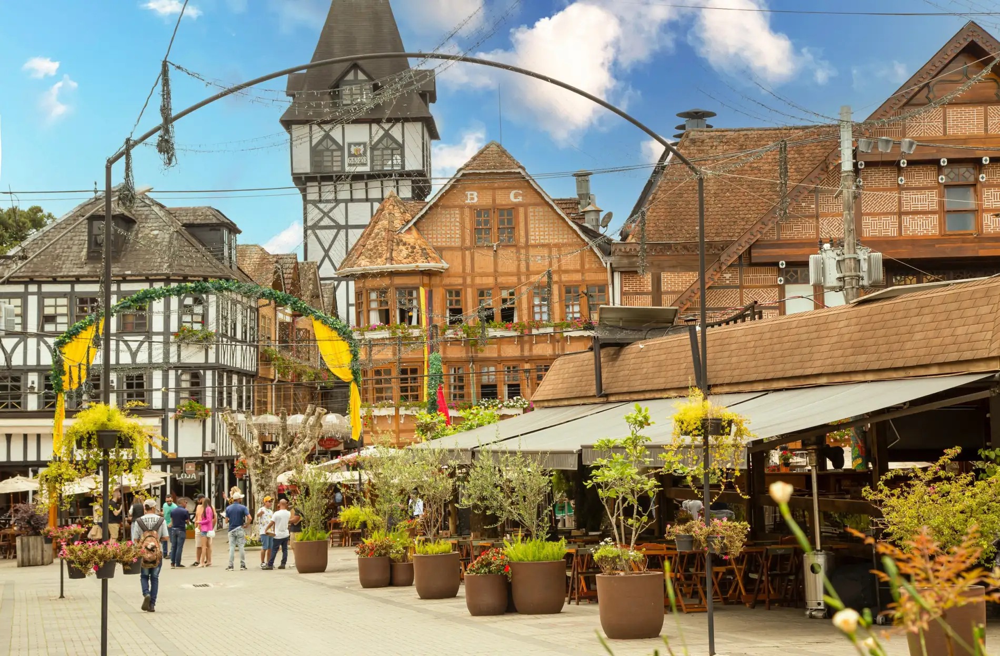

Uma coisa que aprendi viajando sozinha: confiança vem com experiência ✈️ Minha primeira viagem solo me deu muito medo, mas depois dela comecei a me sentir mais independente e segura. Às vezes o primeiro passo é o mais difícil mesmo 💜

Acabei de voltar de uma viagem sozinha para Campos do Jordão e foi uma das experiências mais tranquilas que já tive ✨ A cidade é super acolhedora, tem muitos cafés lindos e me senti segura andando durante o dia. Pra quem quer começar a viajar solo, acho um ótimo primeiro destino 💕
Meninas, alguém aqui já foi para o Chile no inverno? Quero muito conhecer a neve esse ano, mas ainda estou pesquisando hospedagem, segurança e passeios. Aceito dicas de lugares e relatos reais🙏
Dica para quem vai viajar em grupo com amigas: façam um roteiro flexível Na minha última viagem a gente planejou tudo certinho e acabou ficando cansativo demais. Deixar um tempo livre fez MUITA diferença pra aproveitar melhor a viagem 🌍